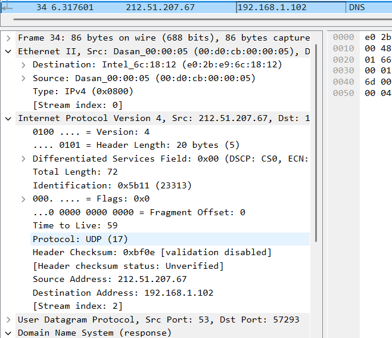

Task 1 - Network Technologies
Author: Estela Martínez Palanca
We divide communication processes into smaller parts (layers) to make them more manageable. Each layer has a specific function and communicates only with adjacent layers.Layering simplifies the design, promotes modularity and interoperability, and makes updates and enhancements easier.
The ISO/OSI model, created by the International Organization for Standardization, defines how communication between computing systems should occur through a layered architecture, which separates the protocols into seven layers:
| OSI Layer | Layer Name |
|---|---|
| 7 | Application |
| 6 | Presentation |
| 5 | Session |
| 4 | Transport |
| 3 | Network |
| 2 | Link |
| 1 | Physical |
The physical layer includes the hardware used for data communication, such as cables and switches. In this layer, data is converted into a bit stream. Some examples are Ethernet (physical part), USB and DSL.
The data link layer facilitates the connection between two machines on the same network. It focuses on flow control and error detection in intra-network communication. This layer can be divided into the MAC (Media Access Control) sublayer and the LLC (Logical Link Control) sublayer. Some examples are ARP, HDLC and PPP.
The network layer enables data transfer between different networks. It is responsible for data routing, determining the best path to the destination. Common protocols in this layer include IP (IPv4, IPv6), ICMP, IGMP, and IPsec.
The transport layer ensures that data packets arrive in the correct order and without loss or errors, providing segmentation, error control and flow management. Examples include TCP and UDP.
The session layer manages sessions between two devices. The time between the start and end of communication is known as a session. It is responsible for ensuring that the session remains open long enough to transfer the data and is closed promptly to avoid wasting resources. It also handles synchronization with checkpoints and recovery in long data exchanges. Examples include NFS and SMB.
The presentation layer prepares the data to be used by the application layer. It is responsible for data translation, compression and encryption. Compression makes communication faster and more efficient by reducing the amount of data to be transmitted. Examples include TLS/SSL, JPEG and MPEG.
The application layer, also known as the human-computer interaction layer, provides network services directly to user applications. It is where protocols like HTTP, FTP, SMTP and DNS operate.
| Layer Name | PDU |
|---|---|
| Application | Message (Data) |
| Presentation | Data |
| Session | Data |
| Transport | Segment |
| Network | Packet |
| Data Link | Frame |
| Physical | Bits |
| OSI Layer | Protocols / Technologies |
|---|---|
| Layer 1 – Physical | RS-232, RS-449, IEEE 1394 (FireWire), USB, Bluetooth, IEEE 802.11 (Wi-Fi) |
| Layer 2 – Data Link | ARP, PPP, HDLC, SLIP, L2TP, Ethernet (MAC), Bluetooth, IEEE 802.11 (Wi-Fi) |
| Layer 3 – Network | IPv4, IPv6, ICMP, IGMP, IPsec |
| Layer 4 – Transport | TCP, UDP, RTP |
| Layer 5 – Session | NetBIOS, SIP, NFS, SMB |
| Layer 6 – Presentation | TLS, SSL, MIME, JPEG, MPEG |
| Layer 7 – Application | HTTP, FTP, DNS, DHCP, Telnet, NNTP, SMTP |
I used the ping google.com command to verify network connectivity to google.com.
As we can see in the screenshots, during the Wireshark capture we observed these protocols: DNS, ICMP, ARP, TCP and TLS.
However, the protocols directly involved in this communication are DNS, ICMP and ARP, since the others correspond to background system traffic (e.g., SNI=edge.microsoft.com)
Additionally, when we inspect the DNS packets in Wireshark, we can see that DNS uses the UDP protocol at the transport layer:
Here are the steps of the network communication observed during the ping:
google.com to an IP address (“Standard query A google.com”).| OSI Layer | Layer Name | Protocols Observed |
|---|---|---|
| 1 | Physical | Ethernet (Physical medium) |
| 2 | Link | ARP, Ethernet II |
| 3 | Network | IPv4, ICMP |
| 4 | Transport | TCP (for other connections), UDP (for DNS) |
| 7 | Application | DNS |
studife.it.p.lodz.pl into an IP address (“Standard query 0xae73 A studife.it.p.lodz.pl”)| OSI Layer | Layer Name | Protocols Observed |
|---|---|---|
| 1 | Physical | Ethernet (Physical medium) |
| 2 | Link | ARP, Ethernet II |
| 3 | Network | IPv4 |
| 4 | Transport | TCP, UDP (for DNS) |
| 7 | Application | DNS, SSH, SCP |
Here are the steps of the network communication observed while accessing the webpage it.p.lodz.pl:
it.p.lodz.pl into an IP address (“Standard query A it.p.lodz.pl”).| OSI Layer | Layer Name | Protocols Observed |
|---|---|---|
| 1 | Physical | Ethernet (Physical medium) |
| 2 | Data Link | ARP, Ethernet II |
| 3 | Network | IPv4 |
| 4 | Transport | TCP |
| 5–6 | Session / Presentation | TLSv1.3 |
| 7 | Application | DNS, HTTPS |
The capture shows the sequence of network communication between the client and the web server:
192.168.1.102) to the DNS server (192.168.1.1) to resolve the domain name studife.it.p.lodz.pl into an IP address (“Standard query A studife.it.p.lodz.pl”).GET / request and the server replies with HTTP/1.1 200 OK. This indicates that the webpage was obtained in clear text (unencrypted).In conclusion, the capture shows both HTTP and HTTPS traffic: the webpage itself uses HTTP, while HTTPS is used for additional services.
| OSI Layer | Layer Name | Protocols Observed |
|---|---|---|
| 1 | Physical | Ethernet (Physical medium) |
| 2 | Data Link | ARP, Ethernet II |
| 3 | Network | IPv4 |
| 4 | Transport | TCP |
| 7 | Application | DNS, HTTP |